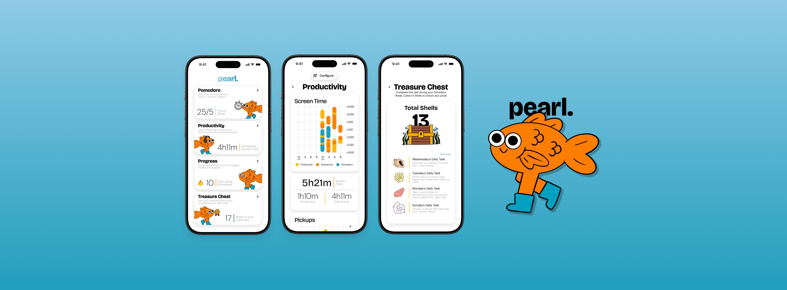
Context
Self-guided mental-health and wellbeing apps relying on guilt-based nudges see median retention plummet from 3.9% at 15 days to just 3.3% by day 30.
In a world flooded with endless notifications, doomscrolling, and digital burnout, many people are seeking healthier screen habits. While tools like Apple’s Screen Time or Google’s Digital Wellbeing exist, they often feel passive, confusing, or easy to dismiss. Users need something more engaging and personalized to truly change their digital habits.
Challenge
Design a mobile app that helps users build mindful digital habits in fun and engaging ways. The app should focus on encouraging healthy screen usage without relying on guilt or restriction. You may incorporate gamification, journaling, social accountability, or mindfulness elements.
Problem
Study Buddy apps often undermine motivation and breed toxicity.
Despite available solutions, users often:
- Feel guilty when using screen-time limiters
- Ignore passive notifications or dashboards
- Lack emotional motivation to shift their habits
Which brings us to the question…
How might we design a mobile app that promotes mindful digital habits in fun and engaging ways, without guilt or restriction?
Solution
An app that replaces guilt-driven limits with gentle, gamified nudges and personalized prompts keeps users engaged and motivated, turning passive screen-time into meaningful, lasting habit-building moments.
User Research
We evaluated several popular productivity and digital wellbeing apps to better understand where they succeed, and where they fall short, in supporting healthy screen habits for college students.
Where these apps fall short
- Guilt based limits discouraged users
- Passive Data doesn’t drive behavior change
- No control over what counts as “productive” or “distractive” elements/platforms
- Minimal emotional or visual engagement

How our app will implement a solution
- Uses gentle encouragement and positive reinforcement
- Delivers playful, visual feedback through animated elements or companions
- Let users define productivity on their own without having to accommodate to app’s rigid rules
- Features a soothing underwater theme that makes focus feel enjoyable
Interviewed students about their digital habits
We conducted semi-structured interviews with 24 college students (ages 18–21) to explore how they manage screen time, navigate digital distractions, and interact with wellness apps in a world of constant notifications and doomscrolling.
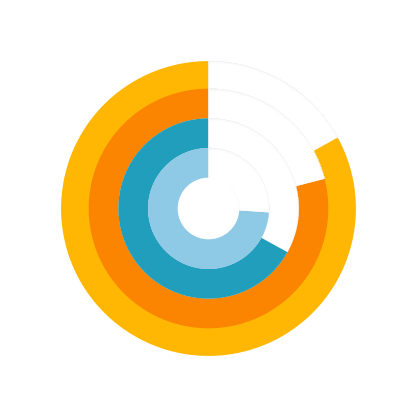
83% 79% 67% 74%Guilt-Driven Alerts Miss the Mark
Most students found rigid limits or guilt-inducing notifications discouraging, anxiety-triggering, or easy to ignore.
Motivation Over Monitoring
Students preferred tools that use positive reinforcement, helping them feel motivated rather than watched.
Convenience Matters
The best tools fit naturally into students’ fast-paced lives and align with their existing habits.
Customization Is Essential
Students want control over defining productivity, not a one-size-fits-all solution.
Ideation
Our goal was to design a streamlined, one-stop solution that minimized the potential for prolonged screen time, aligning with our mission to reduce digital distractions. We prioritized a clean, inviting interface and, through multiple design iterations, arrived at these three refined concepts.
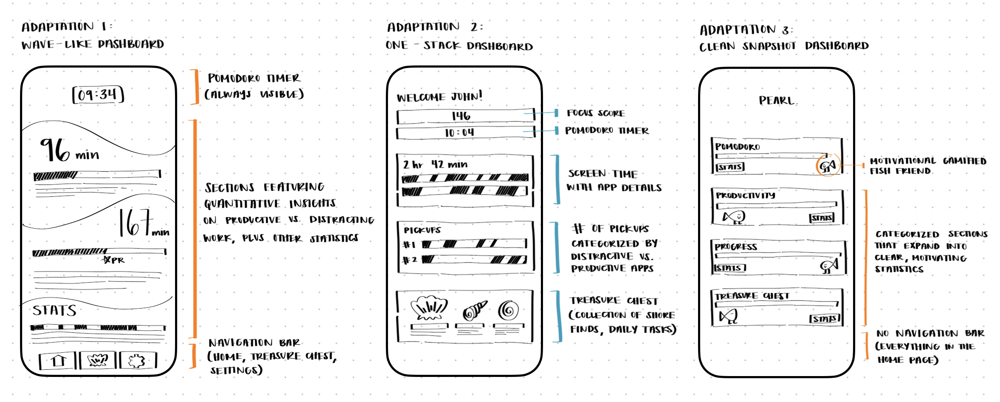
Adaptation 1
Lacks clear structure or hierarchy, making it hard to understand what’s being communicated.
Overwhelming and visually dense.
Lacking a cheerful and motivating element.
Adaptation 2
Clean sections with detailed description and information.
Motivational tasks are present but it may not be optimal for uplifting the user and encouraging them to interact more with the app and keep up their streak.
Adaptation 3
A playful, gamified companion to boost engagement and motivation.
Short blurbs to explain stats clearly in each section.
A clean homepage to reduce reliance on the nav bar and feel more open.
I ended up going with Adaptation 3, where I removed all the extra boxes and grouped them into folders to make the homepage feel cleaner and more welcoming. This version breaks the user’s priorities into four main categories: Pomodoro, Productivity, Progress, and Treasure Chest. Inside each section, users can tweak things like timer length or daily tasks, just enough customization to keep them engaged without pulling them off track. I refined a preliminary information architecture that our app will be based off on.
Final Designs
After loads of caffeine and late night Taco Bell, we present to you Pearl!
Since this project was part of a Designathon, the fast-paced nature didn’t give us time for multiple rounds of formal usability testing. But we did go through tons of iterations, waking up our friends to test different versions along the way. After all that, we finally landed on these beauties.
Pomodoro Timer & Treasure Chest
The Pomodoro timer guides users through a clear flow, from staying session preferences, to staying focused during the timer, and the break, and finally viewing a summary of their progress and rewards. The Treasure Chest features encourages mindful breaks during Pomodoro sessions by offering creative daily tasks that earn the user shells, motivating them with playful rewards and a sense of progress toward unlocking surprises.

CORE FRAMES
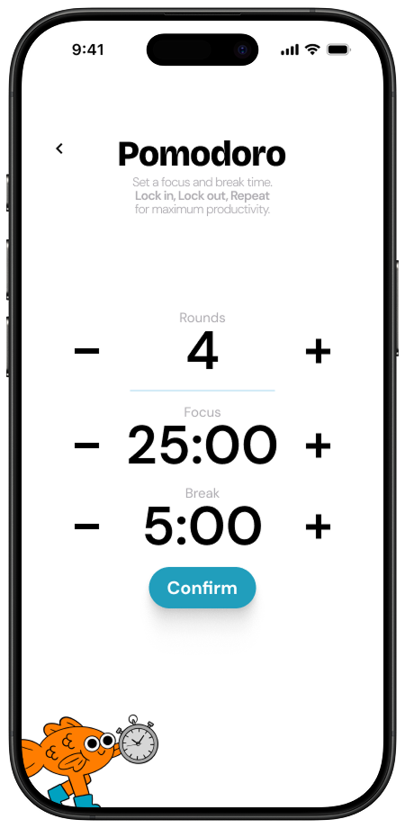
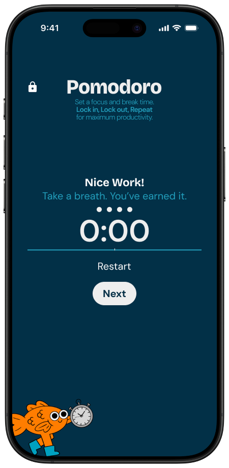
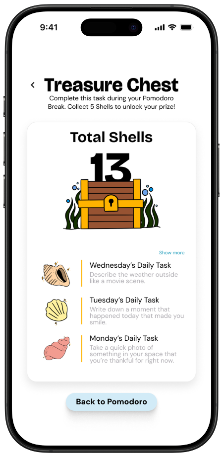
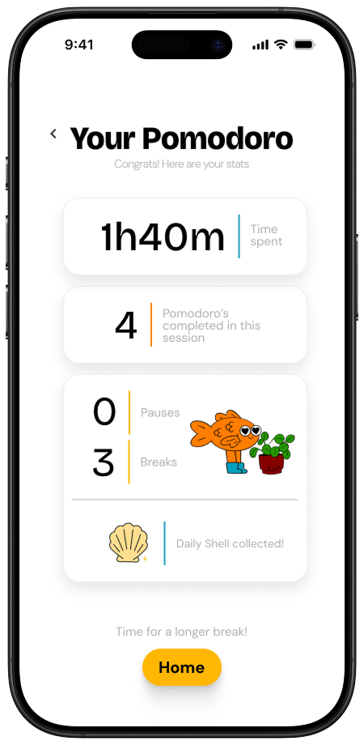
Productivity & Progress
The Productivity flow gives the user a clear overview of screen habits, letting them label apps as productive or distracting, then visualize their screen time, pickups, and Pomodoro sessions to reflect on how their time is really spent. The Progress screen helps users stay motivated by tracking their daily Pomodoro streaks, usage milestones, and visualizing consistency over time with a calendar heatmap.

CORE FRAMES
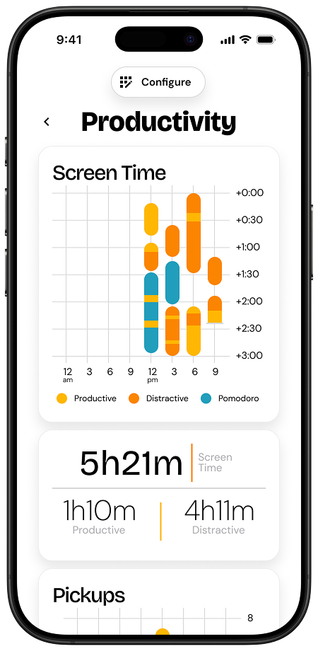
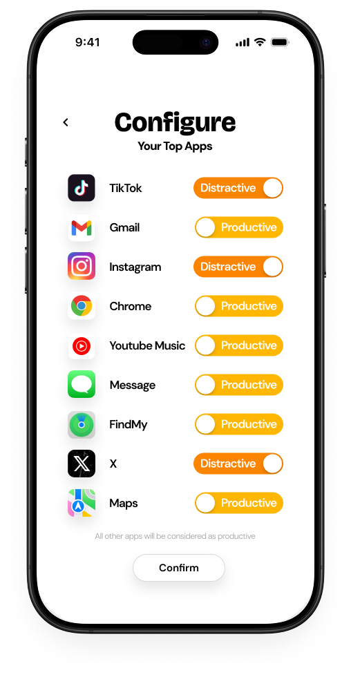
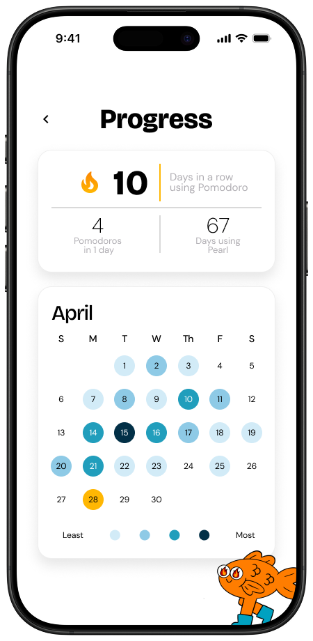
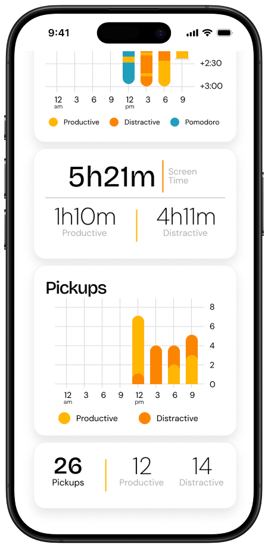
Reflections
Drumroll for the judges feedback…
Pearl ended up receiving the Grand Prize! Our final prototype for Pearl was evaluated by judges at the Jumpstart Spring Designathon and received perfect scores across all criteria, including user research, experience, interface, and creativity, highlighting the strength of our concept, execution, and attention to user needs.
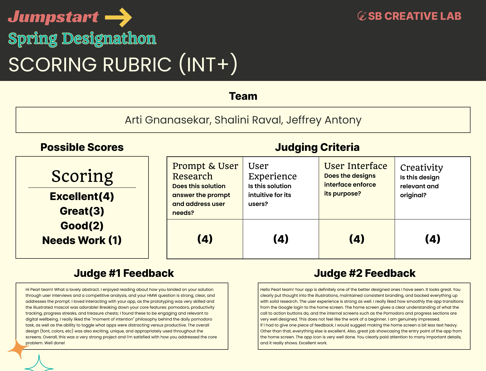
The feedback brought tears to my eyes because they were so sweet and it validated all our hard work 🥹
Key Takeaways
Pearl reminded us that productivity tools can be playful and uplifting. By centering emotion in the design process, we built an experience that motivates users through joy—not guilt or pressure.
Lead through collaboration.
Working in a fast-paced team setting taught us the value of clear communication, quick pivots, and leaning into each other’s strengths. Leading certain design decisions while staying open to feedback made the final product stronger.
Build for flexibility, not perfection.
We discovered that productivity looks different for everyone. Instead of creating rigid systems, we focused on adaptable tools that support users’ personal goals and evolving routines.